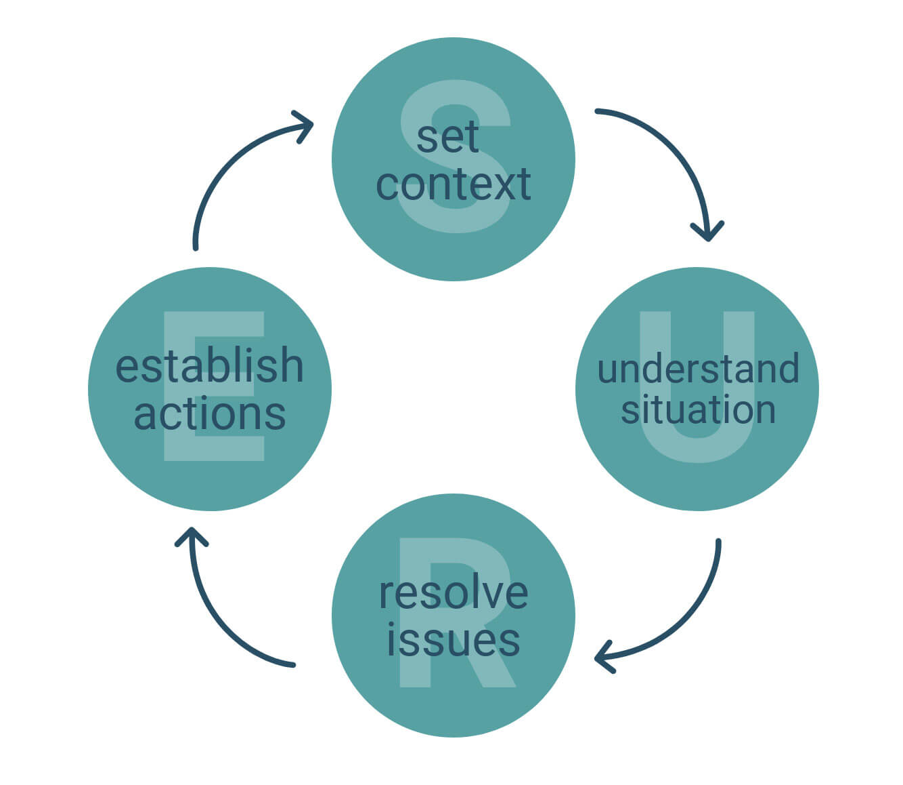

2 The “SURE’ framework for coaching or mentoring (AH Raymondson, 2008)
Unpacking the SURE framework
Set context
This is where a topic for examination or discussion is agreed. A goal to work on is formulated (although it is not uncommon for the ‘real goal’ to emerge later in the session when the full situation is explored. In which case, it becomes an iterative process to redefine the goal). Examples of relevant questions for this element of the coaching or mentoring might include:
- What do you want to achieve in this session?
- What would you want to concentrate on?
- Discussing what subject would be best use of your time?
- What challenges are you facing?
- Where are the blockages in what you are trying to achieve?
- What is the goal?
Understand the situation
Here you would ask probing questions to reach below the surface of the issue you are looking at. Examples of questions to help in understanding the situation might include:
- What is happening?
- Why?
- What impact is the situation having?
- What is the root cause?
- What specifically needs to change?
Resolve issues
This is where the coach or mentor would examine the situation more deeply to work through options for resolving the issue and then to consider the implications of each option. Ultimately a judgement needs to be made by the coachee as to which is the best option. It is important to resist the temptation to provide the solutions, as they should come from the client. One of the main assumptions in coaching and mentoring is that people have more capacity for solving their own issues than they think they have, and they know more than they think they do! Examples of questions to help in surfacing the options and implications might include:
- What are the options? What else ...? Where?
- What would you like to do if there were no restrictions?
- What would XXX (pick anyone … your boss, Richard Branson, Duncan Bannatyne etc) be likely to say if they walked in now?
- What are the strengths and weaknesses of each option?
- What are the implications?
- Which solution are you drawn to and why?
- Who might be impacted by each option? How?
- Which option are you going to implement?
Establish actions
At this stage, you would facilitate identification of the actions required to achieve the goal along with establishing the necessary commitment and motivation to its achievement. Example of relevant questions might include:
- What will be needed to achieve the goal and by when?
- What are you going to do first? Then what …?
- What timeline will you work to?
- What priority will you give to this?
- How will you ensure that momentum is maintained?